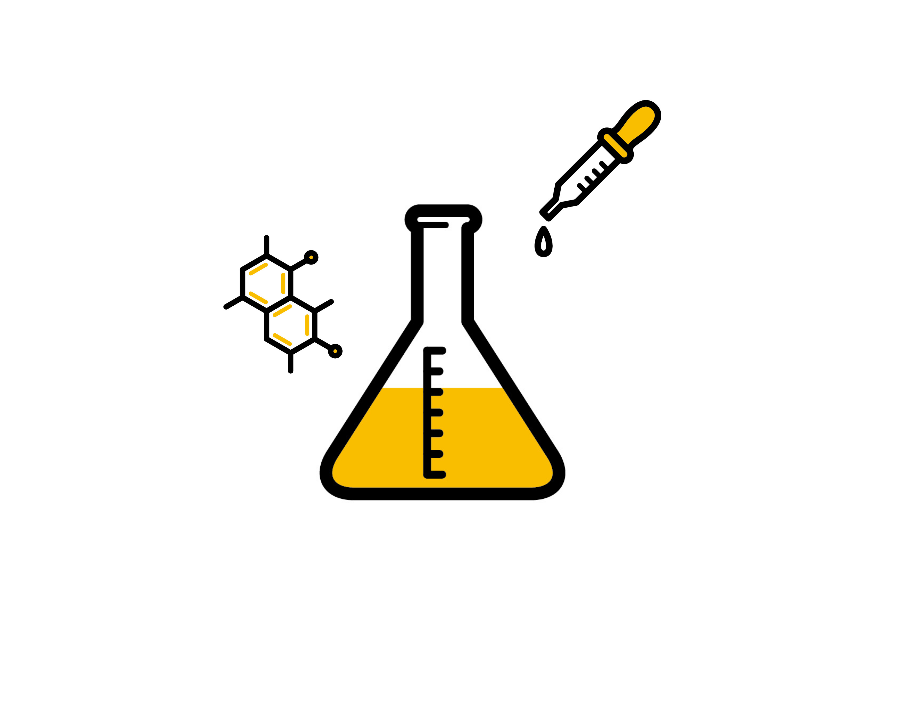

(1)なぜ教員になろうと思ったのですか。
A.一番は、教えるのが好きだったから。また、予備校に通う子が少なくなって、職を変える必要があると考えたから。あと、趣味と一致していたからかな。
(2)この仕事のやりがい・魅力は何ですか？
A.子供の成長が感じられることだねー。種をまいて芽が出て、花が咲いたり実がなったりすると嬉しいみたいな感じかな。
(3)この仕事において、心がけていることはありますか。
A.授業では、写真ではなく、実物を生徒に見せること。（ダイヤモンドとか）触れて、重さを感じてもらうことを意識しているよ。理科だからこそできることかもしれないね。
(4)仕事をしていて思うことは？
A.極論から言うと、教員は経済活動よりも趣味の延長線と考えたほうが多忙とは感じにくくなる気がする。経済活動の一環と考えると、忙しいと思う。
また、仕事に優先順位をつけること、ひとに頼まれたことは優先順位を最上位に、最初にやると仕事がたまらない。効率的にやる。やることリストを上から順に付けることが大切だと思うよ。

(1)なぜ教員になろうと思ったのですか。
A.大学では工学部にいました。仕事はお金を稼ぐことしか考えてなかったのですが、将来の仕事のやりがいを考えてみました。そのときに、一週間キャンプにいって、子供の成長が見れて「教職というすばらしい職があるんだな。」「仕事はお金だけじゃないな」と思ったことがきっかけです。
(2)この仕事のやりがい・魅力は何ですか？
A.教職の魅力は４つあると考えていて、１つは子供の成長が見れること。２つ目は自分の成長があること。３つ目は創造性があること。自分で授業を作るなど、クリエイティブな職業であること。４つ目は同僚性があること。周りの先生方とサポートしたりし合ったりしてみんなと成長できることです。
(3)この仕事において、心がけていることはありますか。
A.授業では日常生活に結びつけることを意識しています。例えば中学２年生の生物の体のつくりとはたらきでは、ぶたの心臓や肺をつかって実際に実験をしました。
(4)仕事をしていて思うことは？
A.極論から言うと、教員は経済活動よりも趣味の延長線と考えたほうが多忙とは感じにくくなる気がする。経済活動の一環と考えると、忙しいと思う。
教職は目指してよかったなと思いました。あの時の自分や親に感謝だなと思います。医者は病気を治す、マイナスからゼロの仕事。弁護士はトラブルを解決する、マイナスからせいぜいゼロへする仕事。しかし、教員は生徒に勉強を教えたり、生徒の成長を助けたり、唯一のプラスを生み出せる仕事だと思っています。